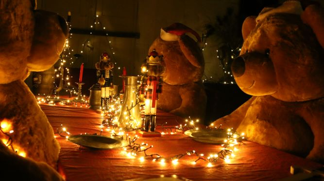

Innenräume
Erdgeschoss

Zweiter Stock

Dachböden

Herzlich willkommen
St. Brice en Coglès
Geheimnisvolle Vergangenheit in der Bretagne.
Willkommen im Château du Rocher Portail, das als eines der schönsten Schlösser der Bretagne gilt.
Das vor über 400 Jahren von Gilles RUELLAN erbaute Breton bescheidener Herkunft wurde 1596 erbaut und
entwickelte sich zu einem der größten Finanziers Frankreichs. Er war ein Berater und enger Freund des Königs
HENRI IV., Königin Marie der MEDIZIN und Kardinal de RICHELIEU.


 ACHTUNG : Fotografieren in den Innenräumen verboten – Bitte lassen Sie Ihre Tiere im Auto.
Aus Rücksicht auf den guten Erhalt der Inneneinrichtung, bitte nicht das Mobiliar, die Wandbehänge, Wände und Kunstgegenstände
berühren. Setzen Sie sich bitte nicht auf die Sessel und die historischen Stühle. In einigen Räumen stehen schwarze Hocker zur
Verfügung.
Kinder sind unter der Aufsicht ihrer Eltern – Achtung ! Gefahr des Sturzes und Ertrinkens. Picknick in den Höfen, Gärten und im
Schloss untersagt.
Bitte lassen Sie aus Sicherheitsgründen Rucksäcke und grosse Taschen in Ihren Autos. Die Anlage steht unter Videoüberwachung.
Schlieβung um 18 Uhr.
ACHTUNG : Fotografieren in den Innenräumen verboten – Bitte lassen Sie Ihre Tiere im Auto.
Aus Rücksicht auf den guten Erhalt der Inneneinrichtung, bitte nicht das Mobiliar, die Wandbehänge, Wände und Kunstgegenstände
berühren. Setzen Sie sich bitte nicht auf die Sessel und die historischen Stühle. In einigen Räumen stehen schwarze Hocker zur
Verfügung.
Kinder sind unter der Aufsicht ihrer Eltern – Achtung ! Gefahr des Sturzes und Ertrinkens. Picknick in den Höfen, Gärten und im
Schloss untersagt.
Bitte lassen Sie aus Sicherheitsgründen Rucksäcke und grosse Taschen in Ihren Autos. Die Anlage steht unter Videoüberwachung.
Schlieβung um 18 Uhr.

Diese Treppe ist eine der ersten Treppen mit Treppenabsätzen in der Bretagne. Die rechte Seite, die sogenannte « Transportseite », ermöglichte der Wache den Zugang zu mehreren Zimmern.


Dieser Saal mit einfachem Dekor war der Aufenthaltsraum der Schlosswache, die den Eingang zum Schloss überwachte und so leichten Zugang hatte zu den verschiedenen Räumen, wo der Schlossherr und seine Familie wohnten. Eine Geschützöffnung (heute verschwunden), wie die in der Kapelle, erlaubte der Wache, in aller Sicherheit auf Feinde zu schieβen.


Dieser reich dekorierte Saal bekundet den Willen des Schlossherrn, sich in die Lebensweise des « groβen französischen Jahrhunderts » zu versetzen. Für ein bretonisches Schloss ist die dekorative Ausstattung auβergewöhnlich.


Diese zweite Treppe mit Treppenabsatz ermöglicht auβerdem den Zugang zu den Kellerräumen und den historischen Küchen, den Gärten und den herrschaftlichen Wohnräumen.

Dieses weiträumige Zimmer diente gewöhnlich zum Empfang hoher Gäste. Es ist mit Mobiliar aus dem XV. und XVI. Jahrhundert, der « Glanzzeit », ausgestattet. Dieser Raum besitzt eine verborgene Privattreppe, die es dem Dienstpersonal ermöglichte, die Privaträume der Adeligen zu betreten und dem Schlossherrn in aller Diskretion den Zugang zu den verschiedenen Privaträumen erlaubte. Das Erstaunlichste ist jedoch, daβ diese Treppe einen Geheimdurchgang verbirgt.


Das Kabinett der Kuriositäten befindet sich in der Garderobe des Prunkzimmers. Die ausgestellten Gegenstände und Dokumente stammen alle aus dem Schloss und wurden von den Adelsfamilien des Schlosses über Generationen gesammelt.

Die Wohnräume von Gilles RUELLAN sind der groβen Prinzen, die dem König und der Königin nahestanden, würdig. Sie bestehen aus einem herrschaftlichen Zimmer, der Garderobe, einer Galerie und einem Arbeitszimmer, wo der Schlossherr sich für seine Privatangelegenheiten zurückziehen konnte. Diese Anordnung, die man in einigen groβen französischen Schlössern findet, ist heute im Westen Frankreichs einzigartig.


Am Ende des XVI. Jahrhunderts gab es noch keine speziellen Räume für die Toilette ; diese Funktion hatte die Garderobe.


(für die Besichtigung nicht zugelassen)
Prestigeelemente bestätigen den Status des Schlossherrn auf der höchsten gesellschaft-lichen Stufe der Epoche. Die Galerie und das Privatkabinett von Gilles RUELLAN, wo sich viele Originalgegenstände befinden, werden restauriert, um dann für die Besichtigung freigegeben zu werden.

Zu Beginn des XVII. Jahrhunderts ist der Salon beim Hochadel ein sehr beliebter Raum. Er ist im Schloss Rocher Portail, wo er zur Entspannung des Schlossherrn dient, auβergewöhnlich wegen seiner Dekoration und des Mobiliars.


Dieser Saal wurde schon bei der Erbauung des Schlosses den Spielen gewidmet. Er wurde im XIX. Jahrhundert restauriert und an die Spiele dieser Epoche angepasst. Dieser Saal symbolisiert das luxuriöse Leben im Schloss im XIX. Jahrhundert ; die Adeligen vergnügten sich, während das Personal ihnen zu Diensten stand.


Bretter mit elektrischen Rufsignalen, sogenannte Diensttafeln des Haushofmeisters, wurden 1882 auf jedem Stockwerk des Schlosses angebracht. So konnten die Adeligen durch ein Klingelzeichen ihre Diener rufen.


(bitte Türen und Wandschränke nicht öffnen)
Es waren insgesamt 35 Personen im Schloss, ungefähr 12 davon den Adeligen zu Diensten. Dieser Flur wurde im XIX. Jahrhundert eingerichtet, um den Kammerdiener den Dienst zu erleichtern. Beachten Sie die Heiβwasser-Heizkörper aus Gusseisen, die 1867 eingebaut wurden. Dies bestätigt, dass das Schloss Rocher Portail einer der ersten französischen Wohnsitze war, die Waschbecken mit flieβendem Wasser, Strom und Zentralheizung hatten.


(Vorsicht beim Auftstieg. Wir bitten um Ruhe, um die Geräuschkulisse zu vernehmen)
Die Wendeltreppe aus Stein, rechts am Ende des Flurs, ermöglichte dem Personal den Zugang zum Dachgeschoss, wo ihre Zimmer waren. Diese Wendeltreppe ist der Beweis, dass das Schloss am Ende des Mittelalters und zu Beginn des Klassizismus erbaut wurde. Der Arbeitstag begann um 6 Uhr 15 und endete um 21 Uhr.

 (Achtung Kopf einziehen)
(Achtung Kopf einziehen)
Im Schloss Rocher Portail konnten alle Zimmer des Dienstpersonals, zu 2/3 im Dachgeschoss, in ihrem Originalzustand erhalten bleiben. Sie sehen die Zimmer der Frauen. Die Geräuschkulisse vermittelt einen Eindruck vom Leben des Dienstpersonals zur Zeit des Barons und der Baronin de Boutray.


Hausangestellte zu sein in einem groβen Schloss, im Dienste der Aristokratie, war im XIX. Jahrhundert eine Ehre und garantierte den Komfort, den im XIX. Jahrhundert wenige Behausungen kannten. Zentralheizung, Toiletten und ein groβes Badezimmer waren ein Privileg für die Angestellten des Schlosses Rocher Portail.


Der Haushofmeister verteilte die Aufgaben an das gesamte Personal. Das Telefon wurde Ende des XIX. Jahrhunderts im Schloss Rocher Portail eingerichtet, als eines der ersten in der Bretagne. Telefonleitung Nr. 4. Die Einrichtungen für das Personal im Schloss Rocher Portail ähnelten sehr jenen des Schlosses, wo die erfolgreiche Fernsehserie « Downton Abbey » gedreht wurde. Man kann also mit Recht das Schloss Rocher Portail das « französische Downton Abbey » nennen.


Wir danken Ihnen für Ihren Besuch. Sie tragen so zur Erhaltung dieses auβergewöhlichen privaten, historischen Bauwerks bei. Es ist unser Gemeingut, das wir für die kommenden Generationen erhalten müssen.
Die Kapelle ist zur Besichtigung frei. In den Gärten, unter Denkmalschutz, finden Sie im Gartenhäuschen eine Ausstellung, archeologische Studien und ein Projekt zur Wiederherstellung der Renaissancegärten. In der Galerie, den Nebengebäuden, dem Herrschaftsgarten und dem Obst- und Gemüsegarten sind auf Tafeln alte Fotos vom Schloss zu sehen.

Im Herrschaftsgarten stehen Holzspiele zu Ihrer Verfügung.

Wir freuen uns auf Ihren Besuch in unserem TEESALON.


Das adlerförmige Rednerpult aus dem Ende des 17. Jahrhunderts ermöglichte es dem Kaplan, die Messe zu lesen.
Die geformten Holztafeln am Fuß der Wände stammen aus dem Ende des 16. Jahrhunderts. Die Kassettendecke zeigt Gemälde auf Holz und Leinwand aus dem 17. Jahrhundert.

Die Mauern wurden im 19. Jahrhundert restauriert. Das Lilie-Motiv und das verwobene „SL“ Initialen bestätigen die Bindung des Herrn an die französische Krone und an Saint Louis. Wird als Heiliger angesehen Zu seinen Lebzeiten wurde König Ludwig IX. von Frankreich mit dem Namen Saint Louis von Frankreich von heilig gesprochen die katholische Kirche am 11. August 1297. Der Tag seines Heiligen wird am Tag seines Todes, dem 25. August, gefeiert. Erst im 17. Jahrhundert wurde er auf nationaler Ebene gefeiert und vertrat den Beschützer von Frankreich und der Monarchie.

Die kürzlich restaurierten Glasfenster repräsentieren auch Saint Louis. Die Restaurierungsarbeiten wurden von Frankreich mit dem nationalen Preis Fort Royal und Atelier Simon Marcq ausgezeichnet Stiftung für historische Denkmäler im Jahr 2016.

Die Kapelle wurde am 25. Juni 1668 auf Ersuchen von Lord de Farcy wieder geweiht, weil sie es zuvor getan hatte wurde von Protestanten verwendet. Es bleibt geschützt von zwei Mönchen, die auf einer Konsole befestigt sind und am Ende des 16. Jahrhundert aus hohler Eiche. Der weiße Stein, der auf dem Boden zu sehen ist, ist der Grundstein für eine gewölbte Decke, die vielleicht gekommen ist von der mittelalterlichen Burg Das war vor dem jetzigen Gebäude. Da die Verteidigung des Schlosses für den Lord von wesentlicher Bedeutung war, zwei Musketenschlitze, die heute noch sichtbar sind, ermöglichten es den Wachen, auf Angreifer außerhalb des Gebäudes zu schießen.





Des animations sont spécifiquement organisées pour ces journées. Danses, musiques, ateliers, démonstrations...

Tarifs : 10 euros par adulte - 6 euros pour les moins de 12 ans - gratuit pour les moins de 4 ans.

Animations Visite libre. Tout au long du week-end, nos guides et bénévoles vous accueillent en costume et vous racontent l'histoire du château et ses anecdotes autour de l'Art de la table, la mode et les expressions de la langue française. Tout le week-end, Association Vikings et Chevaliers (pdf) animeront un marché face au château. (accès via la billetterie du château) .

Jeux dans les jardins pour les enfants Tir à l'arc et jeu de piste "Robin des Bois", animaux "Alice au potager des merveilles", cabanes et parcours ludique.

Danseurs et musiciens Pause gourmande